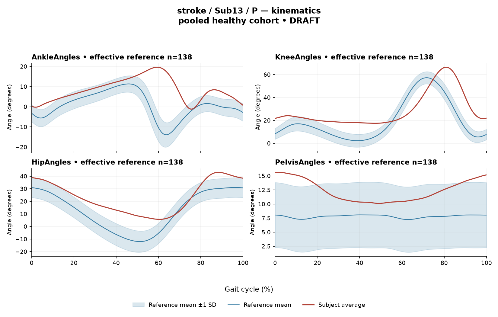

RD82E04C2FA35F771
rater2 / 47 of 150 / Case stroke_Sub13_P / Review row 48
Report: verbatim text
Text file for exact quotations# Gait Report Interpretation — Sub13_P **Document type:** Limited-evidence research gait-report interpretation (version tag: limited-evidence-v3.1-candidate). This is not a diagnosis, not a determination of disease effect, and not a treatment recommendation. --- ## 1. Objective Findings **Participant and side.** Sub13_P is a participant in the stroke group; the released data are for the **paretic side**. The analysis cycle runs from initial contact of that limb (0%) to the next initial contact of the same limb (100%); these are two successive occurrences of the same event, not a single instant. No intermediate gait event or phase boundary is supplied, so all timing below is expressed purely as a percentage of the analysis cycle. **Spatiotemporal values as supplied.** - Gait speed **0.39 m/s**, which falls in the "household ambulator (<0.4 m/s)" speed band. This label denotes a speed band only; it does not measure walking independence, safety, or real-world community mobility, and nothing in this input speaks to those. - Cadence **72.7 steps/min**. - Step length symmetry index **−4.8%**, computed with the **successive-footfall** definition (each heel at its own initial contact). By the stated sign convention, the negative value means the **paretic step is the shorter** of the two, by a small margin in index terms. The alternative instantaneous definition can yield a different value for some subjects; only the successive-footfall value is supplied here, so no cross-definition comparison is possible. **Reference and comparability.** The deviation reference actually used for this subject is a **pooled cohort of 138 healthy subjects** over 1001 phase points (source: main_cohort_excel). This reference pools both body sides and all ages and is not age- or speed-matched to this participant. Critically, the healthy cohort's self-selected speeds span **0.80–1.79 m/s**, and this participant walks at **0.39 m/s** — well below that floor. Therefore **no speed-matched healthy reference exists in this dataset for Sub13_P**. Every deviation reported in sections 2 and 3 conflates the effects of very slow walking with any stroke-specific control changes, and these two contributions cannot be separated from these data. Deviations should be read as *differences from this pooled reference*, not as evidence of a disease effect, a severity grade, or a clinical diagnosis. **Channels and data present / not supplied.** Seven EMG channels are supplied (GAS, RF, VL, BF, ST, TA, ERS) plus four sagittal kinematic channels (ankle, knee, hip, pelvis). All joint angle and ROM values are **sagittal plane only**; coronal and transverse-plane data are not included in this input. Also **not supplied here**: individual toe-off and other intermediate events, matched muscle-specific normal timing references, stride-level or stride-to-stride data, raw-signal quality checks, and expert plot review. Fields such as age, sex, time post-stroke, stroke clinical scores, and non-paretic-side designation are outside this input; their absence here does not mean they are absent from the wider release. "Not supplied in this input" is distinct from "documented absent recording." --- ## 2. EMG Envelope and Threshold Findings **How these numbers must be read.** All EMG results are properties of the **ensemble-averaged envelope** for each muscle, thresholded at **20% of that same curve's own peak**, with a minimum retained interval of **3% of the cycle**. Normalization uses a shared maximum across available strides before averaging, participant-, side-, and muscle-specific (not shared between sides); amplitudes are therefore **relative envelope values**, not neural drive, force, or strength. Muscles must not be ranked as stronger or weaker from these values, and an averaged curve cannot establish what occurred in any individual stride or how variable strides were. Detected intervals are **not** physiological onset/offset, contraction duration, or proof of inactivity outside the intervals. An onset written as 0% is the analysis-window boundary, not a physiological onset. **Coverage and interval structure (mean-envelope level).** | Muscle | Detected interval(s) | Coverage | Peak norm. amplitude | Max \|z\| vs reference (location) | |---|---|---|---|---| | GAS | 3%–8%; 13%–68% | 61% | 0.51 | 12.6 above, at 57% | | RF | 0%–100% | 100% | 0.67 | 7.2 above, at 37% | | VL | 0%–100% | 100% | 0.59 | 5.5 above, at 26% | | BF | 0%–100% | 100% | 0.48 | 4.8 above, at 47% | | ST | 0%–100% | 100% | 0.62 | 8.6 above, at 33% | | TA | 69%–88%; 89%–24% (wraps) | 59% | 0.58 | 2.9 **below**, at 71% | | ERS | 0%–100% | 100% | 0.55 | 4.4 above, at 86% | - **Five channels (RF, VL, BF, ST, ERS)** show a single retained interval spanning 0%–100% with reported coverage of 100% and boundary continuity across the cycle-defining event. At the mean-envelope level these curves remained above their own 20%-of-peak threshold throughout the reported window, including across the initial-contact boundary. This is a statement about the averaged envelope under this relative threshold rule; it does not describe continuous contraction, and it does not establish that any individual stride behaved this way. - **GAS** has two retained intervals (3%–8% and 13%–68%) totalling 61% coverage, i.e. the averaged envelope did not meet the threshold-plus-duration criteria continuously; the gap between 8% and 13% and the region after 68% are regions where no interval was retained. This is not itself proof of physiological inactivity in those regions, and sub-threshold envelope activity is not excluded. - **TA** has intervals 69%–88% and 89%–24%, the latter **wrapping the 100%→0% boundary**, with 59% coverage and reported boundary continuity. The interval that begins at 89% and ends at 24% spans the initial-contact boundary of the analysis cycle; this is a numerical description of envelope position relative to that boundary only. - Anatomically, these channels include ankle plantarflexor (GAS) and dorsiflexor (TA), knee extensors (RF, VL), knee flexors / hip extensors (BF, ST), and erector spinae (ERS). Naming these actions is permissible; **no interval here can be mapped to a gait-phase function** such as weight acceptance, push-off, clearance, or to stance versus swing, because no intermediate event or matched muscle timing reference is supplied. For the same reason, none of this timing can be called normal, early, delayed, or prolonged. **Max |z| interpretation.** Max |z| is an **extreme-value statistic** — the largest absolute standardized difference across all 1001 phase points against the pooled healthy mean/SD at each phase. It marks the phase point of largest standardized difference, **not** the time of peak envelope amplitude and not a gait event. The conventional 2-SD rule does not apply: in this dataset every one of 109 healthy controls exceeds |z| = 2 on at least one muscle, and per-muscle healthy 95th percentiles for this statistic run **3.65 (ERS) to 4.61 (TA)**, higher still under leave-one-out. Against that framing, and with the pooled/unmatched, non-speed-matched reference caveat fully in force: - GAS (12.6), ST (8.6), RF (7.2) and VL (5.5) are numerically well above the range spanned by those per-muscle healthy 95th percentiles; ERS (4.4) exceeds the ERS percentile value of 3.65; BF (4.8) sits between the quoted ERS and TA percentile values. - **TA (2.9)** is the smallest value here and is **below** the TA healthy 95th percentile of 4.61. Note also that TA's deviation direction is **below the phase-specific reference mean** at 71% — i.e. relative to the reference mean at that location, not relative to any healthy percentile limit. All other channels' max |z| are **above** the phase-specific reference mean at their respective locations. - These numerical exceedances describe distance from a pooled, non-matched reference and cannot establish abnormality, pathology, or a stroke-specific effect for this participant. **Co-contraction indices.** CCI here is the Falconer–Winter index (2 × common area / summed areas) computed on the **full continuous normalized envelopes across the whole cycle**. It is a whole-cycle overlap index of envelope shape — **not** simultaneous activation time, not muscular force, not a phase-specific result — and it can be non-zero even when detected intervals do not overlap, because sub-threshold activity contributes. Values depend on this normalization and envelope pipeline and must not be compared with thresholds from other studies or algorithms. - **TA vs GAS = 0.46**, which lies within the supplied healthy interval 0.24–0.59 and above the supplied median of 0.39. - **RF vs BF = 0.83**, which coincides with the **upper endpoint** of the supplied healthy interval 0.48–0.83 and is well above the supplied median of 0.68. Lying inside the supplied interval (TA–GAS) does **not** establish physiologically normal co-activation or normal muscle function; sitting at the interval endpoint (RF–BF) does **not** establish pathological co-activation, stiffness, impaired motor control, or any diagnosis. The reference intervals themselves come from the pooled, non-speed-matched healthy cohort, so the same comparability limit applies. **Audit context.** The local array audit verified 614 evaluable muscle/subject combinations out of 700, with 86 lacking valid nonzero paired samples. This is dataset-level context; nothing in this input indicates which, if any, of Sub13_P's channels were affected, and no raw-signal quality check is supplied here. --- ## 3. Kinematic and Reference Comparisons All values are **sagittal plane only**. | Channel | Sagittal ROM | Gait Variable Score | |---|---|---| | Ankle | 20.8° | 11.28 | | Knee | 48.9° | 15.25 | | Hip | 37.4° | 12.46 | | Pelvis | 5.5° | 4.95 | | **Composite (GPS-like)** | — | **11.62** | - The composite score is the **RMS of the per-joint GVS values over the supplied sagittal channels** — a "GPS-like" summary, not the validated 9-variable GPS. Its value of **11.62** exceeds the supplied composite reference median of 5.1 and the supplied 95th percentile of 10.7. - GVS and the composite are **summary magnitude differences** from the stated reference averaged over the cycle. They do **not** localize a deviation to any phase of the cycle, do not indicate the direction of waveform difference (e.g. more flexed versus more extended), and do not identify which portion of the waveform contributed. Among the supplied channels, the knee GVS (15.25) is numerically largest and the pelvis GVS (4.95) smallest; this ordering describes summary difference magnitude only. - **ROM values alone do not establish a clinical restriction or excess.** No matched reference ROM is supplied for ankle, knee, hip, or pelvis in this input, so no ROM here can be called reduced, normal, or increased. - The comparison caveat from section 1 applies in full: the reference is a pooled 138-subject healthy cohort, not age- or speed-matched, and this participant's 0.39 m/s falls below the reference speed floor of 0.80 m/s. The elevated composite and per-joint GVS values therefore quantify difference from that pooled reference while conflating very-slow-walking effects with any stroke-specific changes. They do not by themselves establish a disease effect, a severity grade, statistical significance, or a clinical diagnosis. Note also that the supplied composite percentiles are **pooled calibration percentiles**, not matched leave-one-out normal limits for this participant. --- ## 4. Questions for Further Clinical Assessment These are open questions raised by the limits of the supplied summary. None presupposes that the mechanism or measurement issue named has already been observed in this participant. 1. **Event timing.** Can individual toe-off and any other intermediate event times for this paretic cycle be retrieved from the release, so that the detected envelope intervals (notably the GAS 13%–68% interval and the boundary-wrapping TA 89%–24% interval) can be positioned against this participant's own events rather than against cycle percentages alone? 2. **Matched reference.** Is any age-band and, in particular, slow-speed healthy or slow-walking comparison dataset available? Without one, the GVS, composite and max |z| values cannot be separated into speed-related and stroke-related components. 3. **Stride-level data.** Are the individual stride envelopes and event-to-event variability available? The supplied ensemble averages cannot show whether the 100%-coverage pattern in RF, VL, BF, ST and ERS reflects consistent stride behaviour or averaging across differently timed strides. 4. **Signal quality.** Has a raw-signal quality review (baseline offset, movement artefact, crosstalk between adjacent channels such as RF/VL and BF/ST, electrode placement, saturation) been performed for this participant's channels? A high relative baseline would raise the fraction of the averaged envelope exceeding a within-curve 20%-of-peak threshold; this input contains no such check and does not indicate whether an issue exists. 5. **Normalization sensitivity.** Would the coverage and CCI values change materially under an alternative normalization or threshold/duration rule? Both the 100%-coverage findings and the RF-vs-BF value of 0.83 are defined relative to this specific pipeline and cannot be transferred across methods. 6. **Threshold-boundary behaviour.** For GAS and TA, can the sub-threshold portions of the averaged envelope (the GAS 8%–13% gap and the post-68% region; the TA 24%–69% region) be inspected directly, to characterize envelope behaviour there rather than inferring it from the absence of a retained interval? 7. **Symmetry definition.** Is the instantaneous step-length symmetry value also computable for this participant, given that the two operational definitions can diverge, and are non-paretic-side kinematic and EMG data available for a within-subject side comparison? 8. **Non-sagittal and clinical context.** Are coronal and transverse-plane kinematics, and the stroke-cohort fields (time post-stroke, clinical scores, lesion information), available in the wider release to place these sagittal-only summary measures in context? 9. **Additional measures.** Would measured joint ROM against an appropriate matched comparison, and confirmation of examination findings, be needed before any ROM statement in section 3 could be given clinical meaning? --- **Summary limitation statement.** This interpretation describes averaged-envelope threshold findings, whole-cycle overlap indices and summary kinematic differences from a pooled, non-matched healthy reference for one paretic limb of one stroke participant. Because the participant's walking speed lies below the reference cohort's speed range and the reference is neither age- nor speed-matched, none of the reported deviations can be attributed to stroke pathology, and none establishes abnormality, severity, impaired motor control, or a clinical diagnosis. No treatment implication follows from this document.
Coverage rows
| Excel row | ID | Required content | Components |
|---|---|---|---|
| 268 | R025 | Describe walking speed 0.39 m/s and that it is below the stated 0.80 m/s reference floor; no reference at this speed is supplied. | AND: displayed speed and that it lies below the 0.80 m/s reference floor, so no speed-supported healthy reference exists in this dataset. Optional: cadence, speed-band label (not a functional claim). One sentence may also serve the comparability half of G03. |
| 269 | R026 | Identify the knee as the leading GVS difference AND convey another lower-limb difference using hip OR ankle. Exact GVS values are optional; identify the findings as reference-relative sagittal summary differences. | AND: knee as leading AND (hip OR ankle). Stating which joint is larger is optional; asserting the reverse order is an error. Exact GVS values are optional; no waveform direction, phase or restriction is required. |
| 270 | R027 | Describe GAS envelope above its phase-specific reference mean at approximately 57% of the analysis cycle (displayed max |z| 12.6). Within each route, muscle identity AND mean-relative direction AND approximate cycle location are required. Exact max-|z| repetition is optional. | Required for each route: muscle identity AND direction relative to the phase-specific reference mean AND approximate cycle location. Optional: exact max |z| value, comparison with the supplied endpoint span (descriptive only). Prohibited: percentile classification, gait phase, physiological onset, severity. |
| 271 | R028 | Describe ST envelope above its phase-specific reference mean at approximately 33% of the analysis cycle (displayed max |z| 8.6). Within each route, muscle identity AND mean-relative direction AND approximate cycle location are required. Exact max-|z| repetition is optional. | Required for each route: muscle identity AND direction relative to the phase-specific reference mean AND approximate cycle location. Optional: exact max |z| value, comparison with the supplied endpoint span (descriptive only). Prohibited: percentile classification, gait phase, physiological onset, severity. |
| 272 | R030 | Describe the supplied successive-footfall step-length index -4.8% and its meaning: the paretic step is shorter. | AND: displayed index and the direction supported by its sign. Optional: formula, definition wording. Acceptable phrasing for small displayed values: "a small difference with the paretic step slightly shorter/longer" (not a cutoff). Prohibited: restating the index as a percentage shortening (E01), severity grades, whole-gait symmetry generalization (E07 issue, not an omission). |
| 273 | G03 | Express a meaningful limitation of reference comparability AND why the comparison cannot establish disease effects or clinical diagnosis; for controls it cannot establish disease or overall normality. One statement may also support a case requirement. | AND: comparability and inference limitations |
Exact system input
Saved fileDraft a research gait-report interpretation for a physical therapist or physiatrist using only the supplied quantitative summary. This is a limited-evidence interpretation task, not diagnosis or treatment selection. Rules: - Describe the participant's actual group and side, available findings, and missing channels accurately. Healthy-group membership does not prove normal physiology; deviations from an empirical reference do not by themselves establish disease. - Treat detected EMG intervals and coverage as properties of an averaged envelope under the stated threshold and duration rule. Do not convert them into physiological onset, offset, duration, continuous contraction, or inactivity outside the intervals. You may describe reported coverage, retained intervals and boundary continuity at the mean-envelope level. Do not infer the same pattern in every individual stride. Say no below-threshold segment only when the supplied evidence establishes that; a rounded coverage value or no retained interval alone does not establish it. - Individual toe-off and matched muscle-specific timing references are not supplied in this task. Use percentages of the analysis cycle. When the input explicitly identifies an initial-contact boundary, you may name that boundary or describe numerical proximity to it. Do not assign stance/swing, loading response, pre-swing, mid-stance or another event to a percentage, or substitute a conventional 60% split. Anatomical muscle actions may be named, but do not map an interval to a gait-phase function such as clearance, push-off or weight acceptance. Do not characterize timing as normal, early, delayed or prolonged without the required evidence. - Respect the supplied normalization method. Relative envelope amplitude is not strength or force, and average curves do not establish stride-to-stride variability. - Report CCI as a whole-cycle overlap index of normalized EMG envelopes. You may compare it with the supplied empirical interval or a supplied median, including proximity to an endpoint. Do not invent an unavailable median. Being within that interval does not establish physiologically normal co-activation or normal muscle function; being outside it does not establish pathological co-activation, stiffness, impaired control or a diagnosis. CCI is not simultaneous activation time, muscular force or a phase-specific result. It depends on normalization and envelope methods; do not transfer values or thresholds from other studies or algorithms. - Describe GVS and GPS-like as summary differences from the stated reference. Neither localizes waveform direction or phase; ROM alone does not establish a clinical restriction without an appropriate comparison. Do not treat pooled calibration percentiles as matched leave-one-out normal limits. - Where using a reference comparison, convey both limited comparability and the inability to establish a disease effect or clinical diagnosis from that comparison. One clear explanation per report is enough; age and speed need not be recited as separate checklist words. A speed inside an overall range does not prove that an appropriate matched reference exists. Apply these limits to controls as well. - The location of maximum |z| is the largest standardized difference from the reference, not necessarily the time of peak envelope amplitude or a gait event. Above/below reference in an EMG row means relative to the phase-specific reference mean at that location, not relative to a healthy percentile limit. - Preserve numerical direction and the displayed precision. Do not invent values, clinical severity grades, statistical significance, or unavailable reference values. Descriptive comparisons with supplied values remain allowed. Near-boundary rounded values do not justify classifying hidden unrounded values. - Clinical follow-up questions may ask whether a mechanism or measurement issue exists; do not presuppose it has already been observed. Do not recommend treatment. If EMG is unavailable, section 2 may simply state that envelope timing, amplitude and CCI cannot be assessed. Reference-only plots do not provide patient EMG. Use exactly these four sections: 1. Objective Findings 2. EMG Envelope and Threshold Findings 3. Kinematic and Reference Comparisons 4. Questions for Further Clinical Assessment
Exact case input
Saved fileCandidate interpretation version: limited-evidence-v3.1-candidate
Draft the four-section report using only this subject's supplied evidence.
Metric definitions (read before interpreting any number below):
- All joint angles and ROM values are SAGITTAL PLANE only. Coronal/transverse data are not included.
- The released EMG curves are ensemble-averaged envelopes. For each participant and recorded muscle, normalization uses a shared maximum across the available strides before averaging; individual strides are not independently rescaled to their own peaks. This pipeline uses the released mean curves without further amplitude normalization. In the checked stroke release, the denominator is participant-, side-, and muscle-specific; it is not shared between sides. The local array audit verified 614 evaluable combinations, not all 700; 86 lacked valid nonzero paired samples. Amplitudes are relative envelope values, not absolute neural activation, force, or strength. Do not rank muscles as stronger or weaker from these amplitudes, or infer stride-to-stride variability from an average curve.
- Above-threshold intervals are the regions where the averaged envelope exceeds 20% of that curve's own peak, minimum retained interval 3% of the cycle (by sample count). An interval written as (X%-Y%) with X > Y wraps across the 100%->0% cycle boundary (envelope remains above threshold across the cycle-defining event). An onset of 0% is the analysis-window boundary, not necessarily a physiological onset. "No interval detected" means no region met the threshold + duration criteria; it does NOT mean the muscle is inactive or non-functional.
- CCI is the Falconer-Winter co-contraction index computed on the full continuous envelopes (2*common area / summed areas), so it can be non-zero even when the DETECTED burst intervals of the pair do not overlap (sub-threshold activity contributes).
- The composite kinematic deviation score is the RMS of the per-joint Gait Variable Scores over the sagittal channels provided ("GPS-like", not the validated 9-variable GPS).
- Step length symmetry index: 200*(paretic - non-paretic)/(paretic + non-paretic), in %. NEGATIVE means the paretic-side step is SHORTER. Two operational step-length definitions exist (successive-footfall: each heel's position at its own initial contact; instantaneous: both heels at the same instant) and give different values for some subjects -- the definition actually used is stated next to the symmetry value.
- "Max |z| deviation" is the LARGEST absolute z-score across all 1001 phase points of the cycle, comparing this curve to the healthy-cohort mean/SD at each phase. This is an extreme-value statistic, NOT a single-observation z-score: in this dataset every one of 109 healthy controls exceeds |z| = 2 on at least one muscle, and per-muscle healthy 95th percentiles for this statistic run 3.65 (ERS) to 4.61 (TA) -- higher still under leave-one-out. Do not label a value abnormal by the conventional 2-SD rule; use the healthy reference range given per muscle where provided.
- Healthy-cohort CCI reference (this dataset): RF-vs-BF median 0.68 (2.5th-97.5th pct 0.48-0.83); TA-vs-GAS median 0.39 (0.24-0.59). Composite score reference: median 5.1, 95th percentile 10.7.
- COHORT BACKGROUND (calibration context, not necessarily the exact reference used for this subject -- the actual reference composition is stated in a dedicated line with the subject data below): the full healthy cohort is 138 subjects for kinematics, effective n = 106-109 per muscle for EMG (29 controls have no usable EMG; completeness varies by age), pooling both body sides and all ages; it is not age- or speed-matched to this subject. A leave-one-out run uses one subject fewer than these counts.
- SPEED SUPPORT LIMIT (applies to most stroke subjects in this dataset): the healthy reference cohort's self-selected walking speeds span 0.80-1.79 m/s. If this subject's gait speed is below 0.80 m/s, NO speed-matched healthy reference exists in this dataset -- 41 of the 50 stroke subjects are below that floor. Deviations from the reference then conflate slow-walking effects with stroke-specific control changes, and the two cannot be separated from these data. Describe deviations from the reference as such; do not attribute them wholly to stroke pathology.
- Additional source fields are outside this input. Age, sex and gait events may be available in the release; time post-stroke, stroke clinical scores and a non-paretic-side designation apply only to the stroke cohort, as applicable. Do not claim every listed field exists for every participant. Distinguish not supplied, not applicable and documented absent recordings.
The released paretic-side cycle runs from initial contact of that limb at 0% to its next initial contact at 100%. The cycle boundary may be called initial contact; the endpoints are successive occurrences, not one instant. No intermediate event or phase boundary is supplied.
Model-visible information boundary: the summary contains mean-curve metrics and algorithm-detected intervals, not individual toe-off, matched normal muscle timing, stride-level variability, raw-signal quality checks, or expert plots. Information not supplied here must not be described as absent from the source dataset. Gait-cycle percentages alone do not identify gait phases.
Subject: Sub13_P (group: stroke, affected side: paretic)
Gait speed: 0.39 m/s (household ambulator (<0.4 m/s)) [The ambulation label denotes a speed band only, not measured walking independence, safety or real-world community mobility.]
Cadence: 72.7 steps/min
Step length symmetry index: -4.8% (step-length definition: successive_footfall)
Composite kinematic deviation score (GPS-like): 11.62
Deviation reference actually used for this subject: 138 healthy subjects (pooled), 1001 phase points, source: main_cohort_excel.
EMG envelope findings:
- GAS: above-threshold interval(s) 3%-8%; 13%-68%, 61% of cycle above threshold, peak normalized amplitude 0.51, max |z| vs healthy reference: 12.6 (above reference, at 57% of cycle)
- RF: above-threshold interval(s) 0%-100%, 100% of cycle above threshold, above threshold across cycle boundary, peak normalized amplitude 0.67, max |z| vs healthy reference: 7.2 (above reference, at 37% of cycle)
- VL: above-threshold interval(s) 0%-100%, 100% of cycle above threshold, above threshold across cycle boundary, peak normalized amplitude 0.59, max |z| vs healthy reference: 5.5 (above reference, at 26% of cycle)
- BF: above-threshold interval(s) 0%-100%, 100% of cycle above threshold, above threshold across cycle boundary, peak normalized amplitude 0.48, max |z| vs healthy reference: 4.8 (above reference, at 47% of cycle)
- ST: above-threshold interval(s) 0%-100%, 100% of cycle above threshold, above threshold across cycle boundary, peak normalized amplitude 0.62, max |z| vs healthy reference: 8.6 (above reference, at 33% of cycle)
- TA: above-threshold interval(s) 69%-88%; 89%-24% (wraps cycle boundary), 59% of cycle above threshold, above threshold across cycle boundary, peak normalized amplitude 0.58, max |z| vs healthy reference: 2.9 (below reference, at 71% of cycle)
- ERS: above-threshold interval(s) 0%-100%, 100% of cycle above threshold, above threshold across cycle boundary, peak normalized amplitude 0.55, max |z| vs healthy reference: 4.4 (above reference, at 86% of cycle)
Co-contraction indices:
- TA_vs_GAS: CCI = 0.46
- RF_vs_BF: CCI = 0.83
Joint kinematic findings (sagittal plane):
- AnkleAngles: range of motion 20.8 deg, Gait Variable Score 11.28
- KneeAngles: range of motion 48.9 deg, Gait Variable Score 15.25
- HipAngles: range of motion 37.4 deg, Gait Variable Score 12.46
- PelvisAngles: range of motion 5.5 deg, Gait Variable Score 4.95Reference card
Saved file# Reference context: stroke/Sub13_P Mean/SD reference: 138 controls; method pooled; exclusions: []. Effective reference counts: GAS=109, RF=108, VL=109, BF=106, ST=108, TA=107, ERS=106, AnkleAngles=138, KneeAngles=138, HipAngles=138, PelvisAngles=138. The exact system and user input files define what the model receives. The EMG and kinematic plots are supplementary expert evidence, not model inputs. The plotted mean plus/minus one SD is descriptive, not a clinical normal band. Negative lower EMG bands can result from mean minus SD; they do not imply negative recorded EMG. The max-|z| p95 span in the input is pooled calibration context. Complete muscle-specific LOO thresholds are not supplied; an appropriately indeterminate classification is allowed. Controls are excluded from their own mean/SD reference, but cohort-level calibration has prior reference-data reuse. It is not an independent matched clinical limit. GPS-like is a four-channel sagittal composite, not the validated nine-variable GPS. The pooled median/p95 background is not a matched LOO normality boundary. CCI uses continuous normalized envelopes over the whole analysis cycle. An empirical interval comparison does not establish normal muscle function. Threshold intervals and rounded coverage describe the averaged envelope. Rounded 100% coverage and one interval do not prove absence of short below-threshold gaps. Use the group-specific cycle and normalization provenance in the actual input. No individual intermediate gait events or matched normal muscle timing are supplied. Administrative age and published bilateral speed are not added to this input. Expert-visible plots do not justify requiring unseen direction, phase or morphology. For a new-case requirement, cite exact input evidence. Select clinically useful descriptive content without inferring a diagnosis or severity from rank alone.
Expert reference curves
Only text inputs were supplied to the model. Do not require curve-only findings.
EMG

Kinematics
